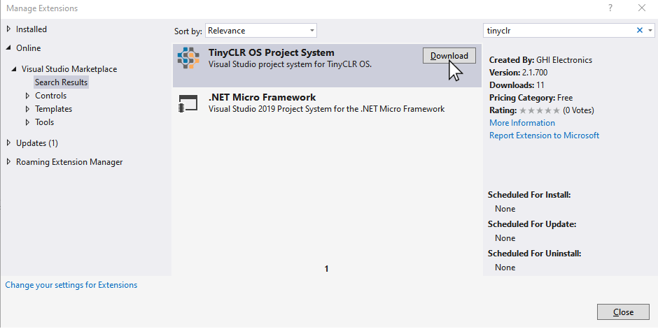
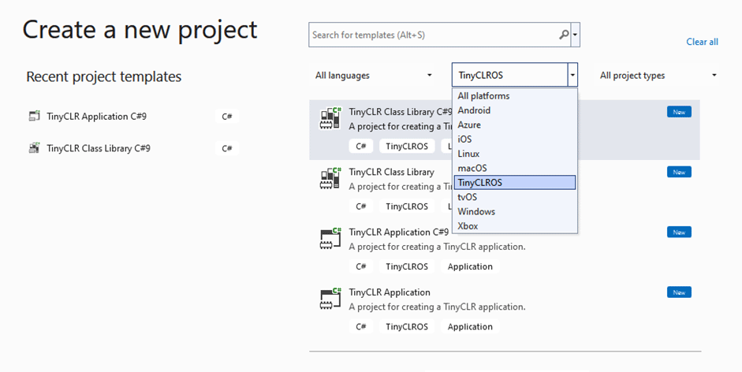
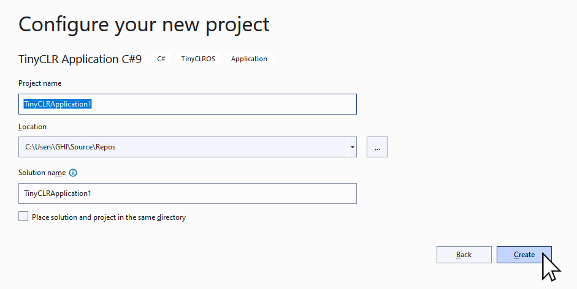

Getting Started
This page explains how to set up the TinyCLR programming environment. It covers device and computer setup and deployment of a "hello world" program to a SITCore device.
Compatible Hardware
TinyCLR OS is made to run on our SITCore line of products. Check out the SITCore page in the hardware section of this documentation to find the device best suited for your project.
TinyCLR Device Setup
To use TinyCLR with a device you must first install the latest version of the TinyCLR firmware on the device.
The TinyCLR firmware includes the Common Language Runtime (CLR) which converts compiled code into machine instructions and manages program execution. The TinyCLR firmware is also responsible for interacting with Microsoft Visual Studio to load and debug your application programs.
Use the TinyCLR Config tool to update the firmware on your device to the latest version.
Development Machine Setup
- If you don't already have Visual Studio 2022, download and install one of the latest editions. Any edition will work, including the free community edition: Visual Studio Community.
- Make sure to select the
.NET desktop developmentworkload when installing Visual Studio. Download and install the newest TinyCLR Visual Studio Project System by going to
Extensions>Manage Extensions. In theManage Extensionsdialog box selectOnlinein the left panel. Typetinyclrinto theSearchtext box in the upper right of the window to search for and install theTinyCLR OS Project System. You'll need to restart Visual Studio to let the extension installer complete the installation.Alternately you can download the Visual Studio Project System from our Downloads page and open or double click on the file to install the extension.
Note
Pre-releases of the Project System are not hosted online but are found on the Downloads page.

Starting a New Project
Let's blink an LED on a SITCore board.
Open Visual Studio and select Create a new project.

In the Create a new project window, select TinyCLROS from the platforms drop down list.

Now select the C# TinyCLR Application template and click the Next button.

We're going to stick with the default name and location. If you use a different name, make sure the program's namespace statement matches the namespace of your program. Now click on the "Create" button.

Now cut and paste the following code into the Program.cs window. Make sure to install both GHIElectronics.TinyCLR.Devices.Gpio and GHIElectronics.TinyCLR.Pins NuGet packages.
using GHIElectronics.TinyCLR.Devices.Gpio;
using GHIElectronics.TinyCLR.Pins;
using System.Threading;
namespace TinyCLRApplication1 {
class Program {
static void Main() {
//Use "SC20100.GpioPin.PE11" on SC20100S Dev Board.
//Use "SC20260.GpioPin.PB0" on SCM20260D Dev Board.
var LED = GpioController.GetDefault().OpenPin(SC20100.GpioPin.PB0);
LED.SetDriveMode(GpioPinDriveMode.Output);
while (true) {
LED.Write(GpioPinValue.High);
Thread.Sleep(100);
LED.Write(GpioPinValue.Low);
Thread.Sleep(100);
}
}
}
}

Make sure your device is plugged into the computer's USB port. Now hit the start button as shown on the above image (or hit the F5 key). If you've done everything correctly, the program will compile and deploy to your device. The left most LED on the dev board should blink if you've done everything correctly.
Top Level Statements
The use of C#9 Top Level Statements allows for easier to read example code snippets. The docs will utilize top level statements when possible.
The TinyCLR project system templates include a C#9 application template. To use Top Level Statements:
- Start a new project, but this time select
TinyCLR Application C#9. - install both
GHIElectronics.TinyCLR.Devices.GpioandGHIElectronics.TinyCLR.PinsNuGet packages. - Copy/paste the code below. Note how it is identical to the earlier code, but now it is top-level-statement!
using GHIElectronics.TinyCLR.Devices.Gpio;
using GHIElectronics.TinyCLR.Pins;
using System.Threading;
//Use "SC20100.GpioPin.PE11" on SC20100S Dev Board.
//Use "SC20260.GpioPin.PB0" on SCM20260D Dev Board.
var LED = GpioController.GetDefault().OpenPin(SC20100.GpioPin.PB0);
LED.SetDriveMode(GpioPinDriveMode.Output);
while (true) {
LED.Write(GpioPinValue.High);
Thread.Sleep(100);
LED.Write(GpioPinValue.Low);
Thread.Sleep(100);
}
Congratulations! You're on your way to becoming a TinyCLR embedded developer!
To find the best hardware for your TinyCLR application, go to the SITCore Docs page in the hardware section of this documentation. or visit the GHI Electronics website.
To learn more about TinyCLR embedded programming check out our tutorials.